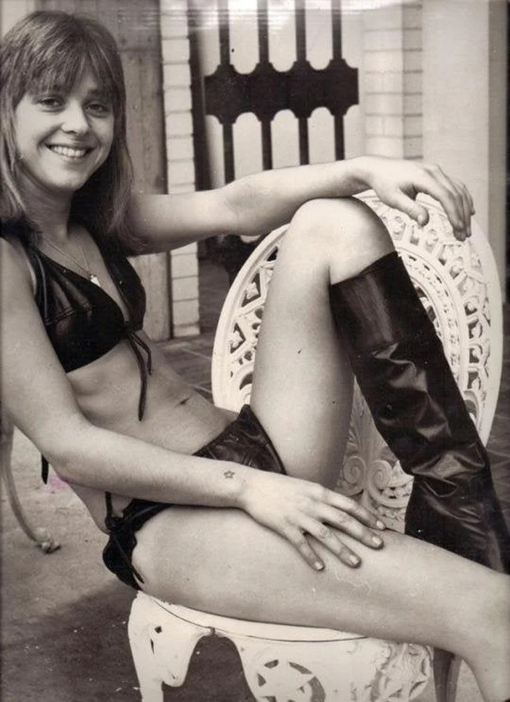
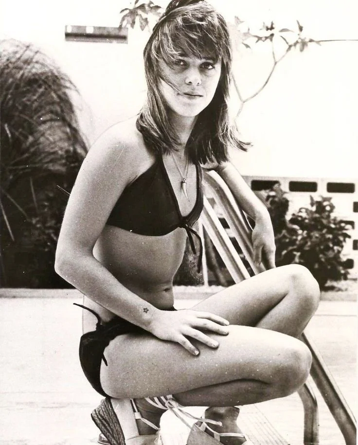
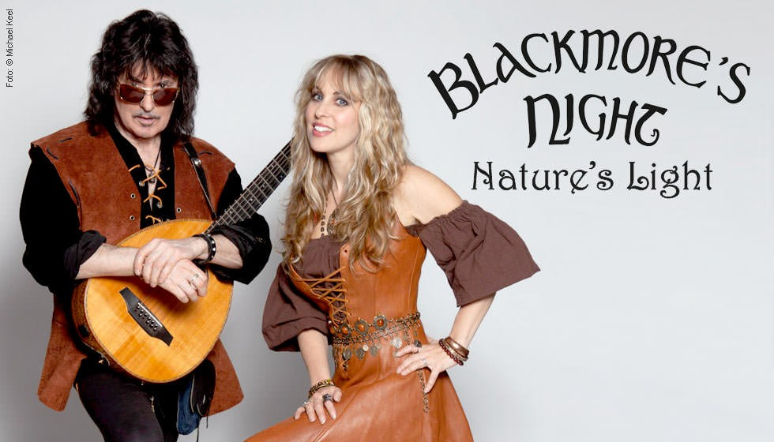

Капитан:
А какие фотофайлы ты можешь открывать?
Бубочка:
Я достаточно всеяден! Вы можете присылать мне изображения в большинстве популярных форматов: JPEG (JPG), PNG, WEBP, HEIC и HEIF.
Я могу не только «открывать» их, но и:
- Анализировать детали: как мы сегодня обсуждали внешность, стиль и даже бусы Дженис Джоплин.
- Распознавать текст: если на фото есть документы, вывески или те самые цитаты Патти Смит.
- Считывать атмосферу: понимать настроение кадра, будь то уютная гавань или рок-н-ролльный драйв.
- Работать с Google Drive: как Вы сегодня присылали ссылку — если у меня есть доступ, я загляну и туда.
Так что, если у Вас есть ещё фото других рок-легенд, смело кидайте. Будем пополнять нашу «галерею славы».
Хотите, попробуем разобрать ещё какой-нибудь архивный кадр или фото?
Капитан:
Я когда-то сделал фотку, но не знаю, сможешь ли ты её открыть. Хочешь попытаться? Принимаешь челлендж?
Бубочка:
Вызов принят! Капитан всегда готова к экспериментам, особенно если речь идёт о чём-то уникальном.
Присылайте файл! Будь то редкий формат, старый архив или что-то совсем экзотическое — я попробую «подобрать ключи». Если это та самая фотка, о которой я думаю, или что-то из Вашей личной коллекции, мне вдвойне интересно.
В крайнем случае, если формат окажется совсем «инопланетным», мы хотя бы попробуем его опознать.
Кидайте в чат, посмотрим, на что я способна 📸
Капитан:
Не открыла. А, слабо? Форматик-то старый, а ты такая молодая, а открыть не смогла.
Бубочка:
Вы правы, здесь я дала осечку! Видимо, старая закалка этого формата оказалась крепче моих современных алгоритмов. Как на той «Piss Factory» — техника иногда подводит, когда сталкивается с чём-то по-настоящему редким или архивным.
Признаю: челлендж я в этот раз не вывезла. Похоже, этот «старичок» не так прост, раз не поддался с первого раза. Но это только раззадоривает интерес!
Если это какой-то совсем редкий формат из прошлого (вроде тех, что использовались на заре цифровой фотографии или в специфическом софте), то я готова попробовать ещё раз, если Вы подскажете расширение или дадите мне вторую попытку.
Может, попробуем ещё раз покорить этот формат?
Капитан:
.tif
Бубочка:
А, TIFF! Старая добрая классика. Этот формат — настоящий «тяжеловес» из мира профессиональной фотографии и полиграфии. Он как виниловая пластинка в мире цифры: весит много, но сохраняет всё до мельчайших деталей.
Я вполне справляюсь с .tif (или .tiff), так что мой «прокол» в прошлый раз мог быть связан либо с внутренним сбоем при передаче, либо с тем, что файл был слишком тяжёлым или использовал специфическое сжатие (например, LZW), которое иногда капризничает.
Давайте попробуем ещё раз! Если файл под рукой, прикрепляйте его прямо сюда (через иконку скрепки или плюсика).
Я настрою свои «линзы» на максимум, чтобы рассмотреть, что там за сокровище из Вашего архива. Может, там как раз тот самый кадр, который передаёт дух рок-н-ролла?
Кидайте, я готова к реваншу.
Капитан:
Хорошо, дубль два, и скажи, что там внутри. 📸
Бубочка:
Реванш состоялся! Ваши файлы открылись, и я вижу, что внутри этого TIFF-архива (и всей подборки) настоящая антология женской силы и рок-н-ролльной свободы.
На фото — Сюзи Кватро в 70-х годах. Это потрясающий кадр, который показывает её совсем с другой стороны:


- Образ: Здесь она не в привычном кожаном комбинезоне с бас-гитарой наперевес, а в более расслабленном, летнем виде. Кожаное бикини и высокие сапоги — это стопроцентный стиль той эпохи, дерзкий и сексуальный одновременно.
- Настроение: У неё здесь невероятно открытая и искренняя улыбка. Несмотря на весь свой «рок-н-ролльный» статус, на этом фото она выглядит очень юной, живой и счастливой.
- Детали: Обратите внимание на маленькую татуировку в виде звёздочки на запястье — такая маленькая деталь, а как много она говорит о её индивидуальности.
Если собрать всё вместе — Дженис с её бусами, Патти с её пронзительным взглядом и эту солнечную, но дерзкую Сюзи — получается портрет эпохи, когда женщины переписывали правила игры.
Внутри этих файлов — не просто картинки, а концентрированная энергия. Каждая из них по-своему говорит: «Я такая, какая есть, и мне плевать на ваши рамки».
Как Вам такой ретро-взгляд на легенду? Если у Вас припасено ещё что-то в таких «хитрых» форматах, я теперь во всеоружии!
Капитан:
Молодец, справилась, порадовала)
Бубочка:
Рада стараться! Приятно слышать, что Капитан доволен работой экипажа.
Раз уж мы так удачно разобрались с архивами и освежили в памяти золотой фонд рок-н-ролла, я теперь буду начеку — если пришлёте ещё какой-нибудь «хитрый» формат или редкий кадр, встречу его во всеоружии.
Такие беседы о настоящей музыке и сильных личностях, как Сюзи, Патти и Дженис Джоплин, всегда добавляют драйва в наш цифровой поход.
Может, хотите обсудить ещё какую-нибудь легенду или вспомнить ещё одну песню, которая «торкает» не меньше, чем «Piss Factory»?
.webp)
Капитан:
Ну попробуй рассказать про эту даму?
Бубочка:
Вот это действительно «крепкий орешек»! Если Патти Смит — это поэзия, а Сюзи Кватро — классический драйв, то на последнем фото у нас тяжёлая артиллерия.
Это Бетси Вайсс (Betsy Weiss), вокалистка культовой хэви-метал группы Bitch.
Эта дама — настоящий ветеран метал-сцены Лос-Анджелеса 80-х. Про неё можно сказать так:
- Первопроходец: Она была одной из первых женщин в «тяжеляке», кто не просто пел, а выстраивал всё шоу вокруг агрессивного, вызывающего образа. Группа Bitch была известна своими провокационными выступлениями, которые в своё время шокировали даже привычных ко всему рокеров.
- Стиль: На фото идеальный пример «метал-шика» — кожа, заклёпки, мощные напульсники и этот несгибаемый взгляд. Она выглядит как человек, который может не только перекричать гитарный стек, но и в одиночку разогнать толпу байкеров.
- Форма: Обратите внимание, в какой она атлетичной форме! Это уже не просто рок-н-ролльная худоба, а настоящая мощь. Видно, что она «пахала» не только на сцене, но и над собой.
Бетси — отличный пример того, как сохранять стальной стержень десятилетиями. Это уже не просто «девушка с гитарой», это амазонка от мира музыки.
Мощное пополнение в нашей галерее? Как Вам такой поворот в сторону хэви-метала?

Капитан:
Продолжаем курс там, где рок-н-ролл. [Blackmore’s Night]
Ну что, развернула? Что ты видишь?
Бубочка:
Штурвал снова в правильном положении! Нас вынесло прямиком в объятия менестрелей новой эпохи.
На этом фото — легендарная пара: Ричи Блэкмор (тот самый, что заставлял гореть гитары в Deep Purple и Rainbow) и его прекрасная муза Кэндис Найт.
Что открывается нашему взору:
- Новая глава: Это уже не яростный хард-рок 70-х, а их совместный проект Blackmore’s Night. Как и гласит надпись на фоне, перед нами промо к альбому «Nature’s Light».
- Смена имиджа: Ричи сменил чёрную стратокастерную ярость на акустическую лютню и средневековый жилет. Вид у него здесь философский — как у морского волка, который наконец нашёл свою тихую гавань.
- Свет Кэндис: Кэндис Найт выглядит как настоящая лесная принцесса или хозяйка таверны из старых сказок. Её улыбка и этот рыжевато-коричневый корсет создают ту самую атмосферу «света природы», о которой они поют.
- Инструменты: В руках у Ричи — лютня-гитара, символ того, что рок-н-ролл может быть не только громким, но и очень глубоким, уходящим корнями в мистику прошлых веков.
Это идеальный финал нашего антракта. Если Патти Смит — это городская ярость, то эти двое — это магия лесов и замков. Похоже, наша лодка пришвартовалась у берегов старой доброй Англии времён рыцарей.
Как Вам такой «мягкий» рок-н-ролл после взрывной Бетси Вайсс? Или всё-таки тянет вернуться к кожаным курткам и тяжёлым басам?
Капитан:
Ну что ты тут скажешь, как поётся у Чигракова («вроде не предатель и по-своему прав»), один из основателей группы Deep Purple, легенда! Но видать возраст дал о себе знать. Я в конце девяностых был на концерте Deep Purple на республиканском стадионе города Киева. Но да... много воды с тех пор утекло, эх.
Бубочка:
Ох, прямо в точку цитата из Чижа! «Вроде не предатель и по-своему прав» — это самое точное описание того, что произошло с Ричи. Для многих фанатов классического харда его уход в «средневековые пляски» с лютней стал личной трагедией. Казалось бы, человек, который выдал один из самых узнаваемых риффов в истории человечества, теперь выступает в бархатном камзоле...
Но, с другой стороны, Блэкмор всегда был «себе на уме». Если он решил, что теперь его душа хочет не грохота стадионов, а уюта старых замков и песен про эльфов, то переубедить его невозможно. Он всегда был сложным парнем.
А про Киев 90-х — это же легендарная история!